EasyTrain 模型训练辅助工具
EasyTrain简介
EasyTrain是无代码的MMEdu模型、BaseNN模型训练辅助工具。借助EasyTrain，不需要编写一行代码，即可训练出AI模型。
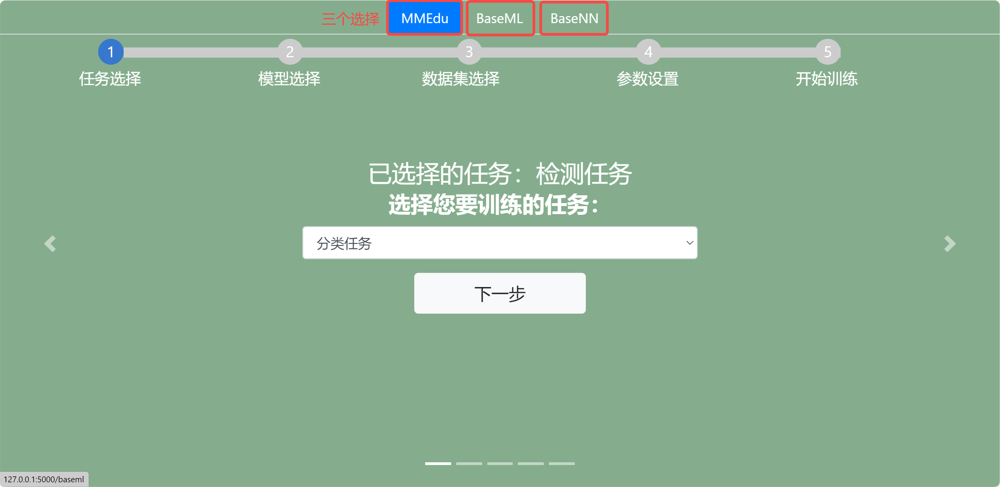
用EasyTrain训练第一个MMEdu模型！
step 1：任务选择
EasyTrain界面打开之后在下拉框中选择训练任务为分类或者检测任务。
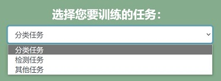
step 2：模型选择
在选择了训练任务类型之后，点击“下一步”，进入模型选择页面，选择训练的模型。训练模型会根据任务对应更改。
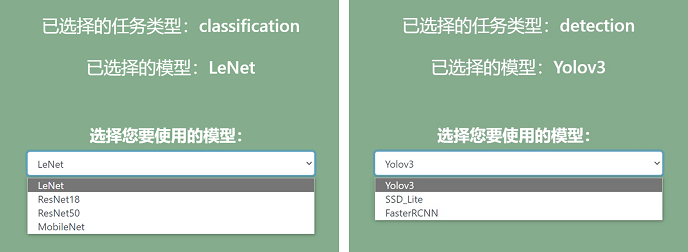
step 3：数据集选择
在训练中要指定训练的数据集，网页会读取XEdu/dataset相应的任务之下数据集。数据集的格式要求为：ImageNet格式（分类任务），COCO格式（检测任务）。
一键安装包中自带分类任务数据集：cats_dogs、hand_gray;检测任务数据集：plate。
目前数据集中为空需要自行下载添加，详细步骤在文件夹中 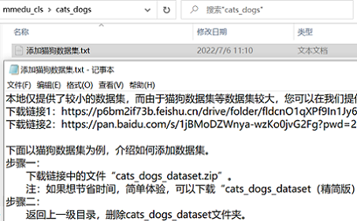 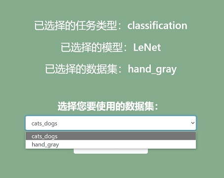
怎么传入自己的数据集？
如果要使用自己的数据集需要将数据集放置在XEdu/dataset相应的任务之下（分类任务mmedu_cls/检测任务mmedu_det），再刷新一下网页即可再数据集菜单选项中看到对应的数据集。例如现在我想做分类任务，在分类任务mmedu_cls文件夹下放置我的数据集“my_newdataset”（如下图所示），刷新网页成功出现。
 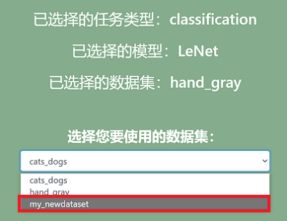
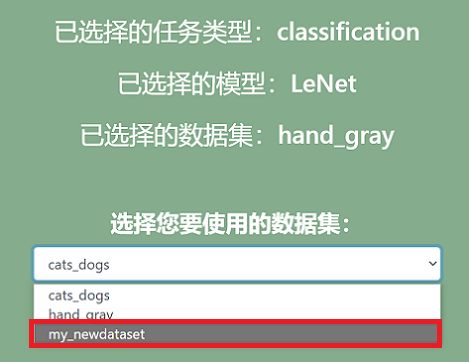
step 4：参数设置
点击“设置基本参数↓”，可以设置学习率，批次大小，训练轮数，随机种子。完成设置后点击“确认”按钮，成功设置会弹出窗口提醒设置成功。
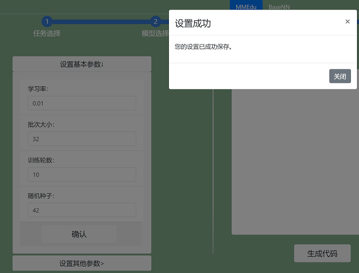
点击“设置其他训练参数”，可以设置分类数量（仅用于分类任务），优化器，权重衰减、设备、预训练模型。完成设置后点击“提交”按钮。
*预训练模型放置位置标准：XEdu/checkpoints/训练任务/数据集名（严格一致）/预训练模型.pth
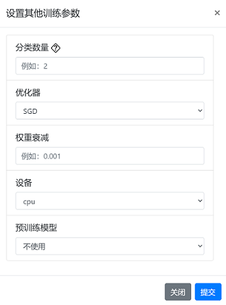
更多参数学习请跳转深度学习训练参数详解
在完成参数设置后，点击右侧的”生成代码”，可以生成训练代码，生成代码之后才可以训练。 生成的代码会显示在上方的代码框，点击右上角复制按钮还可以一键复制代码。
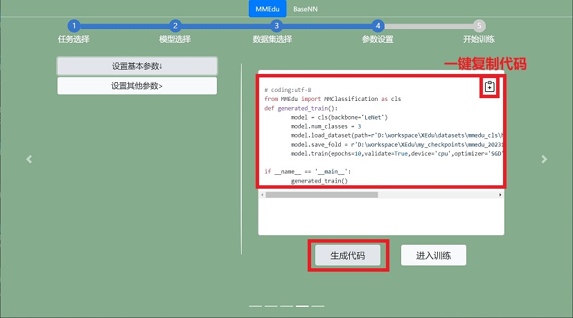
step 5：开始训练
代码生成之后点击”进入训练”按钮即可跳转至训练页面，工具会先检查你的电脑有没有安装MMEdu的库，如果没有请先去”小黑窗“进行pip安装MMEdu。
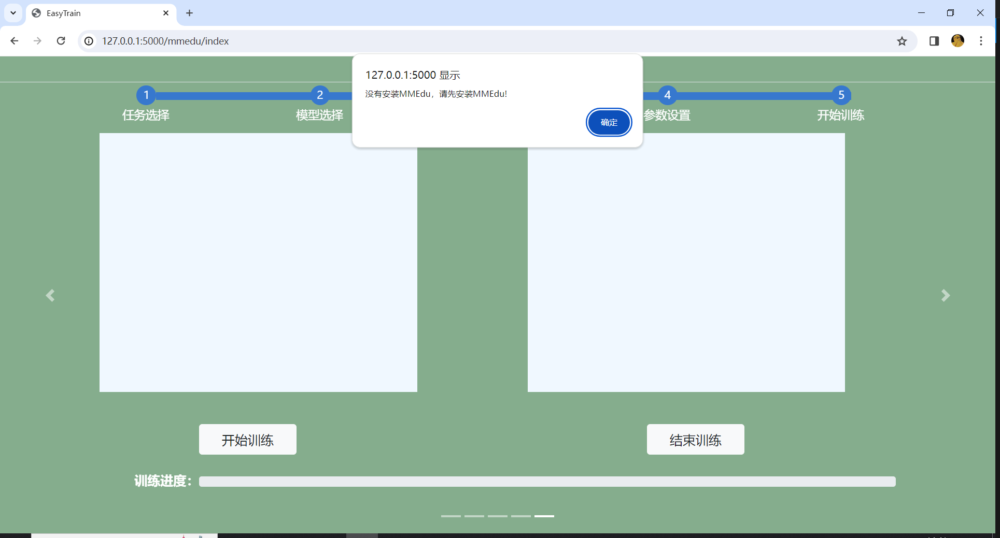
点击“开始训练”按钮即可一键开始训练模型。
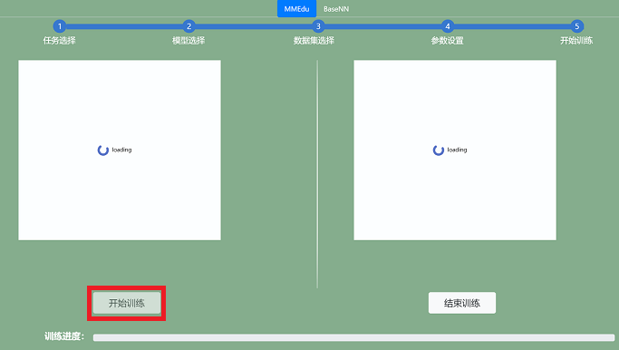
出现“loading”表示模型正在训练中，由于本地cpu训练模型的速度较慢，请耐心等待，可以先去喝杯水休息一下~
若想中断训练，可以点击“停止训练”按钮。
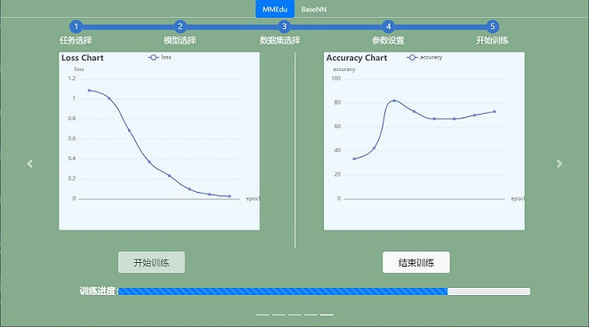
在训练过程中，loss曲线会实时显示在左侧的Loss Chart框中，accuracy曲线会实时显示在左侧的Accuracy Chart框中。坐标轴的横坐标为训练轮数，纵坐标为对应数值。
自己训练的模型文件将保存在XEdu/my_checkpoints中。每次训练都会生成一个文件夹，可以通过文件夹名称上的日期时间找到对应的模型。
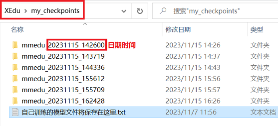
完成模型训练之后，窗口会弹出模型转换，可以点击“是”可实现best_accuracy的pth格式模型转为onnx格式。若要自行转换可使用EasyConvert。
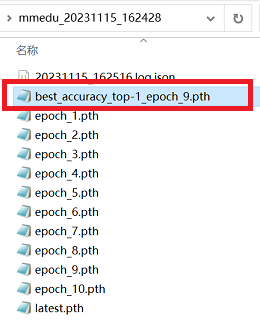
用EasyTrain训练第一个BaseNN模型！
step 1：数据集选择
EasyTrain界面打开之后，选择BaseNN页面，在下拉框中指定训练的数据集，网页会读取XEdu/dataset/basenn之下数据集。一键安装包中自带数据集：iris/iris_test.csv，iris/iris_training.csv。
数据集的格式要求为：csv文件(BaseNN任务)。纵轴为样本，横轴为特征，第一行为表头，最后一列为标签。
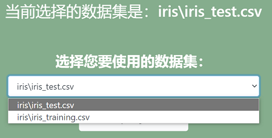
step 2：模型搭建
点击“添加网络层”可以增加网络层，点击右侧“×”可以减少网络层。
注意：
第一层的输入维度要和数据集的特征维度（特征的数量）相等。
因为数据是从上一层流向下一层，因此下一层的输入维度要和上一层的输出维度保持相等。
最后一层的输出维度要和类别数相同。
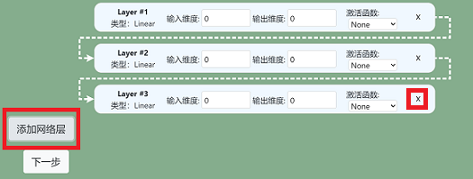
step 3：参数设置
点击“设置基本参数↓”，可以设置学习率，批次大小，训练轮数，随机种子。完成设置后点击“确认”按钮，成功设置会弹出窗口提醒设置成功。
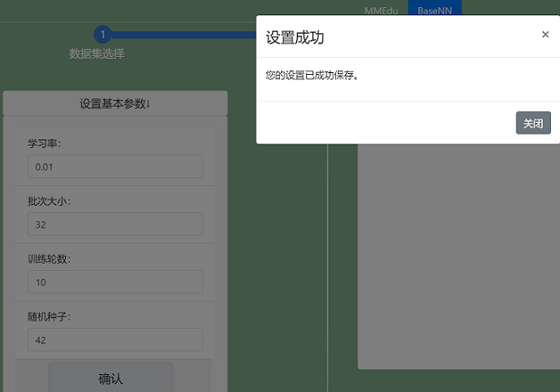
点击“设置其他训练参数”，可以设置分类数量（仅用于分类任务），优化器，权重衰减、设备、预训练模型。完成设置后点击“提交”按钮。
*预训练模型放置位置标准：XEdu/checkpoints/训练任务/数据集名（严格一致）/预训练模型.pth
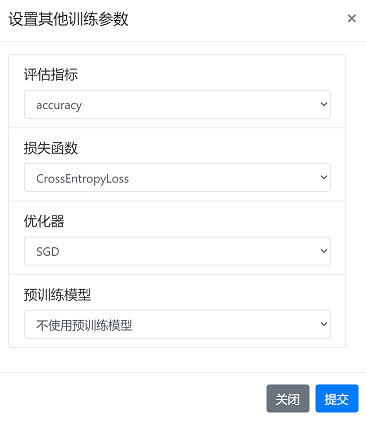
更多参数学习请跳转深度学习训练参数详解
在完成参数设置后，点击右侧的”生成代码”，可以生成训练代码，生成代码之后才可以训练。 生成的代码会显示在上方的代码框，点击右上角复制按钮还可以一键复制代码。
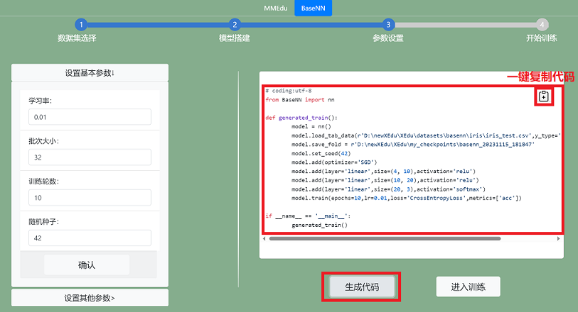
step 4：开始训练
代码生成之后点击”进入训练”按钮即可跳转至训练页面，工具会先检查你的电脑有没有安装MMEdu的库，如果没有请先去”小黑窗“进行pip安装BaseNN。
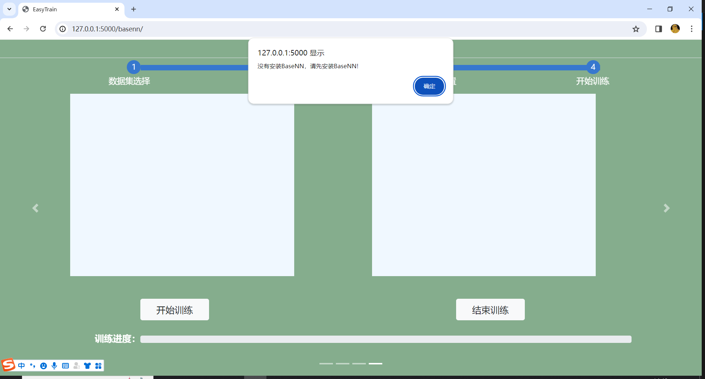
点击“开始训练”按钮即可一键开始训练模型。
出现“loading”表示模型正在训练中，但是也有可能是因为没有安装相应的库，数据集路径错误，数据集为空等等原因导致训练失败，所以先检查一下后台”小黑窗“有没有报错。
如果有报错，修改相应的错误，再通过刷新页面或者关闭”小黑窗“重启工具的方式重新训练。如果没有报错，请耐心等待，由于本地cpu训练模型的速度较慢，可以先去喝杯水休息一下~
若想中断训练，可以点击“停止训练”按钮。
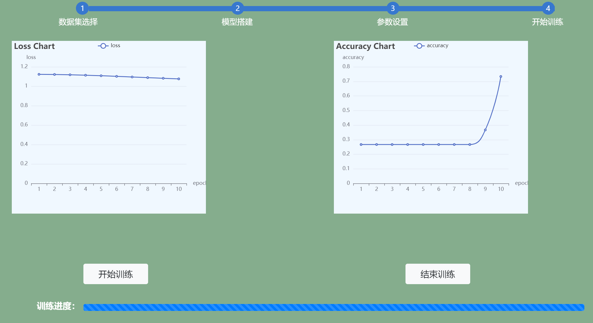
在训练过程中，loss曲线会实时显示在左侧的Loss Chart框中，accuracy曲线会实时显示在左侧的Accuracy Chart框中。坐标轴的横坐标为训练轮数，纵坐标为对应数值。
自己训练的模型文件将保存在XEdu/my_checkpoints中。每次训练都会生成一个文件夹，可以通过文件夹名称上的日期时间找到对应的模型。
完成模型训练之后，窗口会弹出模型转换，可以点击“是”可实现pth格式模型准换成onnx格式模型。若要自行转换可使用EasyConvert。
注意事项
请确认选择的数据集不为空，且数据集格式正确。
一部分参数有范围，例如学习率只能为正值，轮数只能为正整数，请选择合理范围的参数。
关于设备类型，如果没有安装GPU版本的XEdu各模块，则不能以cuda设备运行，只能选择cpu。
请确认推理时选择的网络是否与权重文件匹配，如果不匹配会报错。